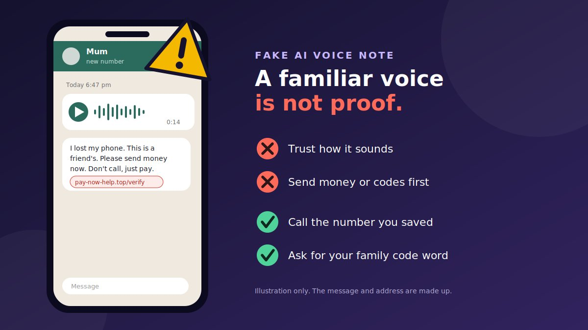

A voice note arrives from "Mum," from your cousin, or from someone at your bank. It is only fourteen seconds long. The voice is right, the tone is right, and the person sounds scared or in a hurry. Then comes the ask: send money, read out a code, or tap a link to "verify." For years, a familiar voice was a good reason to trust a message. With AI voice tools, it is no longer one.
How the fake AI voice note scam works
The US Federal Trade Commission (FTC) explains the basic idea. A scammer may need only a short audio clip of a person's voice, for example from a video or post that is public, and a voice-cloning program. After that, the scammer can make a message that sounds like that person saying whatever the scam needs. The FBI adds that AI-generated voices can sound nearly identical to the real person.
- The sample. The scammer gets a short recording of a voice, often from public social media, a voicemail greeting, or an earlier call.
- The clone. AI software makes a voice that sounds like the person, or edits an existing clip to say new words.
- The delivery. The voice note is sent through a messaging app, often from a new number, a hijacked account, or a fake profile.
- The hook. The message creates fear or urgency: an accident, an arrest, a locked account, or a problem with a payment.
- The ask. You are told to send money, share a one-time code, or tap a link, and to do it quickly and quietly.
Who the voice pretends to be
| Voice | The story | The ask |
|---|---|---|
| Friend or family member | "I lost my phone," "I'm in trouble," "I'm using a friend's number" | Urgent money, often by transfer, gift cards, or cryptocurrency |
| Bank staff | "We detected fraud on your account" | A code, your login, or a tap on a "secure" link |
| Support agent | "Your account is locked" or "we need to verify you" | A one-time passcode, a payment, or a remote-access app |
| Boss or colleague | "I need a favour quickly, I can't talk" | Bank details, gift cards, or an urgent payment |
| Official or authority | A message claiming to be from a senior official, police, or tax office | Moving you to another app or a link that steals logins |
Why voice notes are different from phone calls
Most guides about AI voice scams talk about live phone calls. Voice notes in chat apps change the picture in a few ways that are easy to miss.
- It can be prepared in advance. A scammer can generate and polish a voice note before sending it, so there is no real-time moment where the voice might slip.
- You cannot question it on the spot. A voice note does not answer back, so a clever challenge only works once you start a live conversation.
- It arrives inside a trusted space. It shows up in the same app where you talk to real friends, which makes it feel safer than an unknown number calling you.
- It often comes with a link. The FBI has warned of campaigns that used text and AI-generated voice messages to build rapport, then sent a malicious link under the guise of switching to a different messaging platform to steal logins.
- The account can be real. If a friend's account was taken over, the number and profile photo are genuine, and only the person behind it is fake.
Warning signs of a fake AI voice note
Do not rely on spotting an "AI sound." The FBI says AI-generated content has advanced to the point that it is often difficult to identify. Look at what the message asks for instead.
- It is about money, a code, or a link. Voice notes from real people rarely end with an urgent request to do one of these.
- It comes from a new or unknown number that says it is someone you know.
- It creates urgency or fear. "Right now," "don't tell anyone," "I can't talk."
- It tells you not to call. A real person in trouble would usually want to talk to you.
- It asks for payment that is hard to undo, such as wire transfers, cryptocurrency, or gift cards. The FTC lists these as signs of a scam.
- It asks you to move to another app or to open a link to "verify" yourself.
- It asks for a one-time passcode. The FBI says never to give a two-factor code to anyone over email, text, or a messaging app.
- The words feel slightly off. The wording, accent, or pacing may not match how the person really talks. Treat that as a hint, never as proof either way.
- Caller ID or the profile looks right. Numbers can be spoofed and profiles can be copied, so this does not prove anything.
Realistic examples
These are composite examples written to show the pattern. They are not reports about real people, and the details are made up.
Example 1: The "I lost my phone" voice note
Voice note, 0:14, from a new number"Hi, it's me. I dropped my phone and I'm using a friend's. I need you to pay a bill for me right now, please don't call."
TextSend it to this account. I'll pay you back tonight.
Why it's a scam: new number, urgency, "don't call," and a payment request. A voice that sounds right does not change any of that.
Example 2: The "bank fraud team" voice note
Voice note, 0:21"This is the fraud team. We have blocked a suspicious payment. Tap the link to verify your identity now or your card will be frozen."
Why it's a scam: a bank does not need you to tap a link in a message to "verify." Open your bank's own app, or call the number on your card.
Example 3: The "support agent" voice note
Voice note, 0:18"Hello, I'm from account support. We just sent you a six-digit code. Please read it back to me so I can unlock your account."
YouWhy do you need the code?
Voice note"It's standard procedure. Please be quick."
Why it's a scam: the code was triggered by the scammer signing in to your account. It is the last step they need.
Example 4: The "boss" voice note
Voice note, 0:12"I'm in a meeting and can't talk. I need you to buy some gift cards for a client and send me the numbers. I'll explain later."
Why it's a scam: gift cards, secrecy, and urgency. Check with your boss or manager on a known number or in person.
Example 5: The hacked friend's account
Voice note, 0:16, from a friend's real account"Hey, can you do me a quick favour? Send me the code you are about to get, I'm locked out of something."
Why it's a scam: the account is real but the person is not. The code is likely your own sign-in or reset code. Call your friend on their saved number before doing anything.
How to verify a voice note safely
The rule is simple: verify the person, not the voice. Use a channel the scammer does not control.
- Stop before you act. Do not send money, a code, or a tap on a link. A few minutes of delay costs you nothing.
- Switch channels. Call the person on a number you already have saved in your contacts, not the number the message came from and not a number given in the message. The FBI advises independently finding a number for the person and calling to verify.
- If the message says it is from a new number, confirm that new number through a platform or contact you already trust, such as your saved number for that person or a family member.
- If you cannot reach them, contact another family member, a mutual friend, or their workplace, as the FTC suggests, and ask whether the story is true.
- Ask for your family code word. The FBI recommends a secret word or phrase that family members agree on to verify each other. A cloned voice does not know it.
- Ask a private question. Pick something that cannot be found on social media or in the chat. A prepared voice note cannot answer it, though a live scammer might try to bluff.
- For banks and companies, go to the source. Open the official app, or call the number printed on your card, a bill, or the company's official site. Never use a link or number from the message.
- Never share a one-time code. No real friend, bank, or support agent needs you to read out or send a code.
- Do not rely on your ears or on a detector. A voice that sounds right proves nothing, and there is no reliable way to tell by listening.
Quick check before you act
Tick what you have done. Nothing you tick leaves your browser.
Prevention advice
- Set up a family code word. Agree on it in person or on a call, keep it private, never type it in a chat, and avoid anything guessable such as a pet's name. Change it if it is ever shared.
- Save important contacts properly. Keep family, colleagues, and your bank's number saved, so you can call them back without using a number from a message.
- Be careful with new numbers. A message from a "known" person on a new number should be confirmed through the old one before you do anything.
- Limit public voice clips. The FTC notes a short clip posted online can be enough. You do not need to hide, but consider who can see videos and voice posts of you and your family.
- Protect your accounts. Turn on two-step verification for your messaging apps, email, and banking, and never share the code. For WhatsApp, see the official two-step verification guide.
- Treat money requests as suspicious by default. Do not pay by gift card, wire transfer, or cryptocurrency on a message alone.
- Add a payment rule at work. Confirm any unusual payment request with a call-back to a known number, and ideally a second approver.
- Talk to family, especially older relatives and teenagers, about voice cloning, so the first time they hear about it is not during a scam.
What to do after being scammed
If you sent money, shared a code, or tapped a link, act quickly. This can happen to anyone, and there is no need to feel embarrassed.
- Stop replying. Do not send more money, even if you are told it will fix the problem or cover a "fee."
- If you sent money, contact your bank or payment provider immediately, on the number on your card or in its official app, and ask what can be done. Recovery cannot be promised, but speed gives the best chance of limiting the loss.
- If you shared a code or tapped a link, treat the account as compromised. Change the password from a device you trust, turn on two-step verification, log out other devices, and check for changes you did not make.
- If your messaging account was taken over, follow the app's recovery steps. For WhatsApp, see the official stolen accounts guide.
- Tell the real person and your contacts that a fake message was sent, so others do not fall for it.
- Keep evidence: save the voice note, the sender's number, links, screenshots, and payment records.
- Report it using the table below, and report the account to the messaging app.
- Be wary of "recovery" offers. People who contact you offering to get your money back for a fee are often running a second scam.
Where to report, by country
| Country | Report to |
|---|---|
| United States | ReportFraud.ftc.gov (FTC), and the FBI's IC3. |
| United Kingdom | Report Fraud (formerly Action Fraud). |
| Canada | Canadian Anti-Fraud Centre (1-888-495-8501). |
| Australia | Scamwatch, and ReportCyber if you lost money or information. |
| India | National Cyber Crime Helpline 1930 and cybercrime.gov.in. |
| Singapore | ScamShield (helpline 1799) and the police. |
| Elsewhere | Your national police cyber unit, consumer protection authority, and your bank. |
Conclusion
The fake AI voice note verification scam works because a voice feels like proof. It is not. A voice can be copied from a short clip, a number can be spoofed, and an account can be taken over. What a scammer cannot easily fake is a separate, trusted route to the real person. Call a number you already saved, use a family code word, never share a one-time code, and treat any voice note that asks for money or a click as unverified until you have checked.
This guide covers voice messages made or altered with AI. Our guide to the WhatsApp voice note verification scam focuses on WhatsApp account takeovers and verification codes. For related tricks, see the fake AI customer support chat scam, the fake digital identity verification link scam, and the fake QR code verification scam.
Got a voice note transcript or message you are unsure about? Paste the text into our free checker for a quick first read.
Frequently asked questions
What is a fake AI voice note verification scam?
It is a scam where a voice note or voice message that sounds like a friend, relative, bank employee, or support agent is created or altered with AI. It is used to make you trust a request to send money, share a one-time code, or tap a link.
Can scammers really copy someone's voice?
Yes. The US Federal Trade Commission says a scammer may only need a short audio clip of a person's voice, for example from content posted online, plus a voice-cloning program. The FBI warns that AI-generated voices can sound nearly identical to the real person.
Can I tell an AI voice note from a real one by listening?
Not reliably. The FBI says AI-generated content has advanced to the point that it is often difficult to identify. Do not rely on how a voice sounds. Verify the person through a separate channel, such as a call to a number you already have saved.
What if the voice note came from my friend's real account?
Accounts can be taken over, so a message from the right account is still not proof. Contact the person by phone on a number you already have, or ask a mutual friend, before you send money, share a code, or click anything.
What should I do if I already sent money or shared a code?
Contact your bank or payment provider immediately, secure your accounts and change passwords, tell the real person and your contacts, and report the scam to your national fraud service. Quick action gives the best chance of limiting the loss, but recovery cannot be promised.
Got a voice note or message you want checked?
Run it through the checker